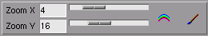
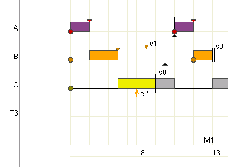
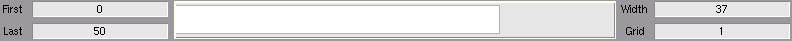
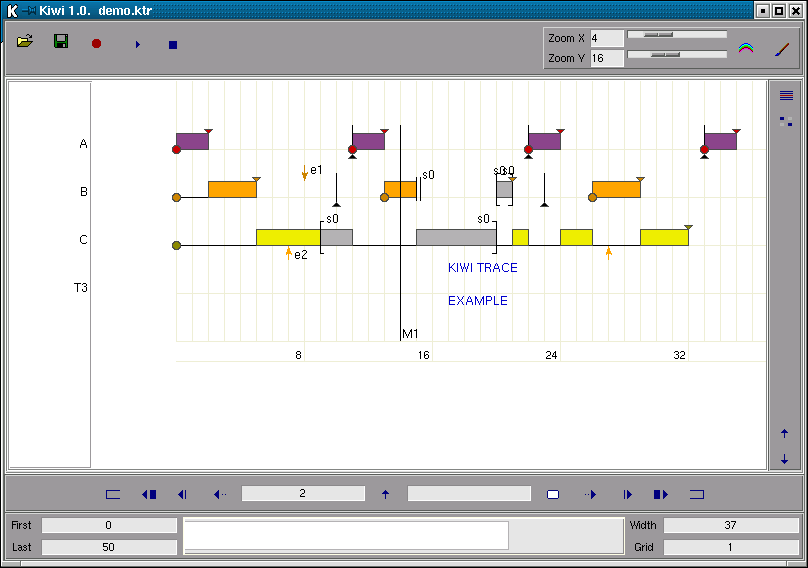

July 1, 2003
Installation
Interface
The Trace File
Using the Keyboard
Using the Mouse
Trace Example
Author
Kiwi is fully written in Tcl/Tk and so, in order to run Kiwi, you need the Tcl/Tk interpreter installed on your system. Tcl/TK is available as a standard binary package for most of the Linux distributions. You have binary installation packages for Windows and MacOS as well. In any case, if you don't have a binary package for your system, you can always build it from its sources. Tcl/TK is available for virtually any Unix system and it is very easy to compile and install. Please, refer to the Tcl Developer Xchange homepage for details.
Unix Systems
First, you must find the full pathname of the Tcl/TK interpreter which is installed in your system. The name of this interpreter is "wish" or "wishN.M" being N.M the version of Tcl/TK that you have. You can execute "which wish" for getting the full pathname of "wish". Next, edit the first line in the file called "kiwi" and correct the full pathname of "wish" if necessary. That's all. You can run now Kiwi just by executing the file named "kiwi".
Windows Systems
You should rename the file "kiwi" to "kiwi.tcl". You can run now Kiwi by double-clicking the icon of the file "kiwi.tcl".
MacOS Systems
No tested yet. Sorry.
Main Buttons
Main Drawing Options

Viewer

Tools
Move
Information

A Kiwi trace file is a text file in which lines represent timed events. Each line is formed by five fields, being the space character used as the field separator. These fields are:
Time Event Type Arg1 Arg2 Arg3
The "Time" and "Event Type" fields are mandatory. The
"Arg1", "Arg2" and "Arg3" fields are used depending on the
"Event Type" value, as follows:
| Event Type | Arg1 | Arg2 | Arg3 | |
| 0 | START | Line | Color | |
| 1 | STOP | Line | Color | |
| 2 | DEADLINE | Line | Color | |
| 3 | EXEC-B | Line | ||
| 4 | EXEC-E | Line | Color | |
| 5 | READY-B | Line | ||
| 6 | READY-E | Line | Color | |
| 7 | LOCK | Line | Text | Color |
| 8 | UNLOCK | Line | Text | Color |
| 9 | ARROWDOWN | Line | Text | Color |
| 10 | ARROWUP | Line | Text | Color |
| 11 | BLOCK | Line | Text | Color |
| 12 | VLINE | text | Color | |
| 13 | TEXTOVER | Line | Text | Color |
| 14 | TEXTUNDER | Line | Text | Color |
The requirements imposed on the field values are:
You can set drawing options in the trace file. These drawing options are optional and they
must be placed at the beginning of the trace file, before any timed event. Each option
line is formed by four fields, being the space character used as the field separator.
These fields are:
Drawing Option Arg1 Arg2 Arg3
The "Drawing Option" field is mandatory. The "Arg1",
"Arg2" and "Arg3" fields are used depending on the "Drawing
Option" value, as follows:
| Drawing Option | Arg1 | Arg2 | Arg3 |
| FROM | Time | ||
| DURATION | Time | ||
| ZOOM_X | Integer (-6 .. 38) | ||
| ZOOM_Y | Integer (1 .. 48) | ||
| PALETTE | Palette Name | ||
| DECIMAL_DIGITS | Integer (0 .. 9) | ||
| LINE_NAME | Line | Text | |
| COLOR | Event Type | Line | Color |
| Key | Action |
| <Control-o> | Open a trace file |
| <Control-s> | Save the current trace as a new trace file |
| <Control-r> | Print the current view as an EPS file |
| <Control-p> | Play the current trace |
| <Control-e> | Show/Hide the Events List pane |
| <Control-v> | Show/Hide the Drawing Options pane |
| <Escape> | Stop playing and drawing |
| + | More Zoom X |
| - | Less Zoom X |
| <Shift-+> | More Zoom Y |
| <Shift--> | Less Zoom Y |
| <Enter> | Redraw |
| <Space> | Redraw |
| <Home> | Go to the beginning of the trace |
| <Shift-Left> | Slow backward |
| <Left> | Normal backward |
| <PgUp> | Fast backward |
| <Control-g> | Go to an specific time point |
| <Delete> | Delete duration and go-to lines |
| <Shift-Right> | Slow forward |
| <Right> | Normal forward |
| <PgDn> | Fast forward |
| <End> | Go to the end of the trace |
| Mouse | Where | Action |
| Move | Viewer | Set the Current Time Point |
| Move | Miniature | Set the Current Time Point |
| Move | Events List Pane | Points to the current event in the Events List Pane |
| Double-LeftButton | Viewer | Go to the Current Time Point |
| Double-LeftButton | Miniature | Go to the Current Time Point |
| Double-LeftButton | Events List Pane | Go to the current event in the Events List Pane |
| Drag-RightButton | Viewer | Make a Duration Line |
File demo.ktr
DECIMAL_DIGITS 0
DURATION 50
LINE_NAME 0 A
LINE_NAME 1 B
LINE_NAME 2 C
PALETTE Rainbow
ZOOM_X 4
ZOOM_Y 16
COLOR EXEC-E 0 orchid4
0 READY-B 0
0 READY-B 1
0 READY-B 2
0 START 0
0 START 1
0 START 2
0 EXEC-B 0
2 READY-E 0
2 STOP 0
2 EXEC-E 0
2 EXEC-B 1
5 READY-E 1
5 STOP 1
5 EXEC-E 1
5 EXEC-B 2
7 ARROWUP 2 e2 orange
8 ARROWDOWN 1 e1
9 LOCK 2 s0
9 EXEC-E 2
9 EXEC-B 2
10 DEADLINE 1
11 DEADLINE 0
11 READY-B 0
11 START 0
11 EXEC-E 2 gray70
11 EXEC-B 0
13 READY-E 0
13 STOP 0
13 EXEC-E 0
13 READY-B 1
13 START 1
13 EXEC-B 1
14 VLINE M1
15 BLOCK 1 s0
15 READY-E 1
15 EXEC-E 1
15 EXEC-B 2
17 TEXTOVER 3 "KIWI TRACE" blue3
17 TEXTUNDER 3 "EXAMPLE" blue3
20 UNLOCK 2 s0
20 LOCK 1 s0
20 READY-B 1
20 EXEC-E 2 gray70
20 EXEC-B 1
21 UNLOCK 1 s0
21 READY-E 1
21 STOP 1
21 EXEC-E 1 gray70
21 EXEC-B 2
22 DEADLINE 0
22 READY-B 0
22 START 0
22 EXEC-E 2
22 EXEC-B 0
23 DEADLINE 1
24 READY-E 0
24 STOP 0
24 EXEC-E 0
24 EXEC-B 2
26 READY-B 1
26 START 1
26 EXEC-E 2
26 EXEC-B 1
27 ARROWUP 2 "" orange
29 READY-E 1
29 STOP 1
29 EXEC-E 1
29 EXEC-B 2
32 READY-E 2
32 STOP 2
32 EXEC-E 2
33 DEADLINE 0
33 EXEC-B 0
33 READY-B 0
33 START 0
35 READY-E 0
35 STOP 0
35 EXEC-E 0

Kiwi was written by Agustín Espinosa Minguet ( aespinos@dsic.upv.es )
Please send me an e-mail for any comments about Kiwi.